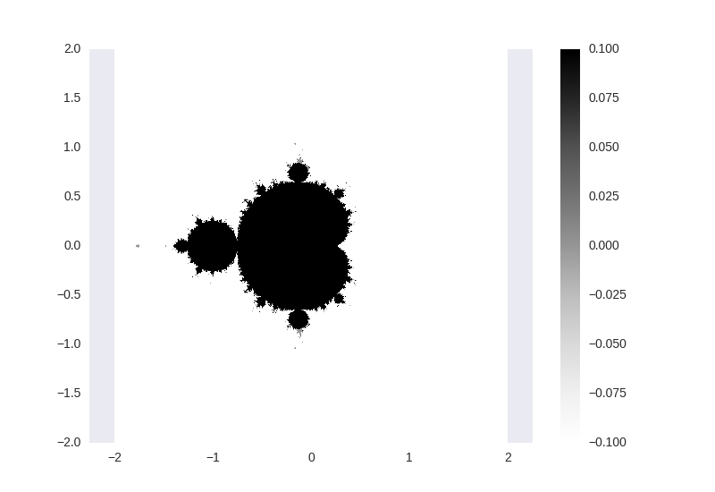
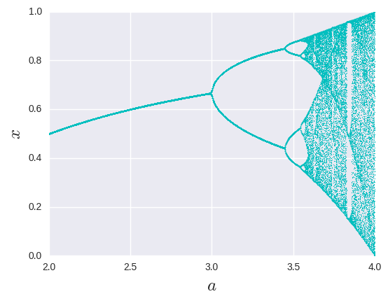
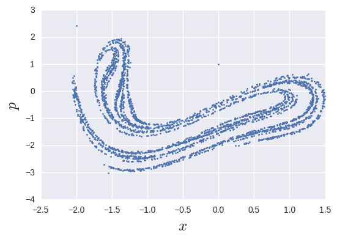
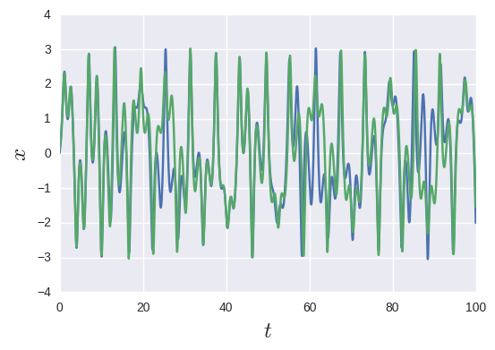
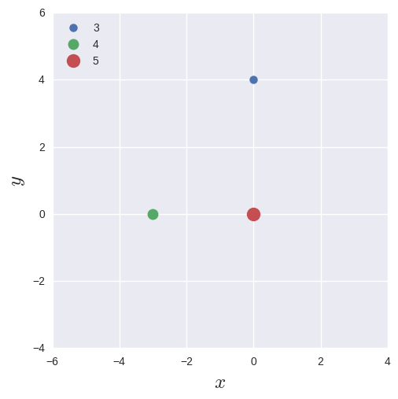

カオスとかフラクタルとかって見てるだけで楽しいですよね. 簡単な数式や, 単純な物理から突拍子もないグラフが出てくるのはとても不思議でもあります. その世界を少しだけ覗いてみましょう.
当方カオス理論が専門ではないので, 深い話には立ち入りません. 眺めて楽しければよいのです.
決定論的であるがしかし, 非常にランダムな振る舞いをする非線形力学系をカオスと呼びます. 一番の特徴が「初期値鋭敏性」というもので, 初期値をほんのちょっと変えただけで全く異なる軌道を描きます. 二重振り子などが有名です.
自己相似性を持つ図形のこと. フラクタル次元のはなしは面倒なのでスルー. コッホ曲線などが有名です.
カオスやフラクタルのすごいところは, 単純なモデルから複雑怪奇なものが出現することです. ということで, シンプルなコードから意味不明な出力を得ることを目指します.
いわゆる, フラクタルのはしりです. パラメータ$(x, y)$を用いて定義される漸化式 $$ a{n+1} = an^2 - bn^2 + x,\hspace{1cm} b{n+1} = 2anbn + y,\hspace{1cm} a0 = b0 = 0 $$ について, $n\rightarrow \infty$でも発散しないような点$(x, y)$の集合のことをMandelbrot集合と呼びます. Mandelbrot集合はフラクタル集合です. もちろん手では解けませんが, 漸化式自体は単純そうですね.
``` import numpy as np import matplotlib.pyplot as plt import seaborn as sbn
N, M = 50, 500
def mandel(X, Y): a, b = [0] * 2 for i in range(N): a, b = a2 - b2 + X, 2 * a * b + Y
return a**2 + b**2 < 4
x, y = [np.linspace(-2, 2, M)] * 2 X, Y = np.meshgrid(x, y) plt.pcolor(X, Y, mandel(X, Y)) plt.show() ```
適当な$n$まで回してあげて, $a^2 + b^2 < 4$を発散しない条件としています. PythonではTrueが1, Falseが0に評価されることを利用しています.

収束の度合いを$n$で勘定してあげるとグラデーションっぽいグラフにもできますが, 今回はコードのシンプルさを重視しました. これくらい粗い絵でも自己相似の意味は理解していただけると思います.
パラメータ$x$を用いて定義される漸化式 $$ x{n+1} = axn(1 - xn) $$ をロジスティック方程式と呼びます. Mandelbrotよりさらにシンプルですね. $a$を変化させたときに$xn$が収束(もしくは複数の値を振動)する点をプロットしていくとカオス的な振る舞いを見ることができます.
```py3 def logistic(a): x = [0.8] for i in range(400): x.append(a * x[-1] * (1 - x[-1])) return x[-100:]
for a in np.linspace(2.0, 4.0, 1000): x = logistic(a) plt.plot([a]*len(x), x, "c.", markersize=1.7)
plt.show() ```
漸化式を$n= 400$まで回して後ろの$100$個をプロットしています.

いいかんじに意味不明のグラフになっていますね. 非周期的であるという意味でカオス的ではありますが, 初期値鋭敏性は特に見られませんでした. これは生物の個体数に関するモデルにも用いられているそうです.
剛性のある振り子に減衰項と磁石による強制振動項を追加した系で, 基礎方程式は
$$ m\frac{d^2x}{dt^2} = -\gamma \frac{dx}{dt} + 2ax - 4bx^3 + F_0\cos(\omega t + \delta) $$ です. この振り子はカオス的に振る舞い, かつその相空間を$2\pi/\omega$の周期でプロットしたもの(Strange attractor)はフラクタルな性質を持ちます.
微分方程式を解きます. odeintについては
NumPy・SciPyを用いた数値計算の高速化 : 応用その1
を参考にしていただけるとよいと思います.
```py3 from scipy.integrate import odeint, simps
def duffing(var, t, gamma, a, b, F0, omega, delta): """ var = [x, p] dx/dt = p dp/dt = -gammap + 2ax - 4bx3 + F0cos(omega*t + delta) """ xdot = var[1] pdot = -gamma * var[1] + 2 * a * var[0] - 4 * b * var[0]3 + F0 * np.cos(omega * t + delta)
return np.array([x_dot, p_dot])
F0, gamma, omega, delta = 10, 0.1, np.pi/3, 1.5*np.pi a, b = 1/4, 1/2 var, var_lin = [[0, 1]] * 2
t = np.arange(0, 20000, 2*np.pi/omega) t_lin = np.linspace(0, 100, 10000)
var = odeint(duffing, var, t, args=(gamma, a, b, F0, omega, delta)) varlin = odeint(duffing, varlin, t_lin, args=(gamma, a, b, F0, omega, delta))
x, p = var.T[0], var.T[1] xlin, plin = varlin.T[0], varlin.T[1]
plt.plot(x, p, ".", markersize=4) plt.show() ```
少しややこしいですが, 処理のメインはほんの一部で残りはパラメータの設定だけです.

不思議なものが出てきました. これがStrange attractorです. これも細かくプロットして拡大すると自己相似性が見えるらしいです. 振り子の位置を初期値を変えてプロットしてみましょう
```py3
plt.plot(tlin, xlin) varlin = odeint(duffing, [0.1, 1], tlin, args=(gamma, a, b, F0, omega, delta)) xlin, plin = varlin.T[0], varlin.T[1] plt.plot(tlin, xlin) plt.show()
```

これが初期値鋭敏性です. ほぼ一致していたと思ったら外れて, 外れたと思ったらまた同じ軌道を描く, という普通の力学系では理解しがたい動きをしています. まさにカオスですね.
最後のトリです. 2体運動は解析的に解くことが可能ですが, 3体以上の多体問題はその限りではありません. カオスを数値計算で見た世界で初めての例だった気がします.
重さが3, 4, 5の質点を以下のように配置した平面を考えます

この3体は互いに引力相互作用を持っています. この質点たちの動きを数値計算で追ってみましょう. ちょっとだけややこしい系なので解析力学の力を借りましょう. 系のLagrangeanは
$$ L = \sumi^{3, 4, 5}\left[\frac{\dot{q}i^2}{2mi} + \sum{j>i}G\frac{mimj}{r{ij}}\right], \hspace{1cm}qi = (xi, yi), \hspace{1cm}r{ij} = \sqrt{(xi - yj)^2 - (yi - yj)^2} $$ であり, これをEuler-Lagrange方程式 $$ \frac{d}{dt}\frac{\partial L}{\partial\dot{q}{i}} - \frac{\partial L}{\partial q_{i}} = 0 $$ に代入することで質点$i$の運動方程式が得られます. ただ微分するだけなのですが, 符号によく注意してください. 具体的な式はここには書きません. コードを見てください.
```py3 def manybody(var, t, m3, m4, m5, G): """ var = [x3, y3, x3dot, y3dot, x4, y4, x4dot, y4dot, x5, y5, x5dot, y5dot] dx3/dt = p3 dpx3/dt = -2Gm3x3(m4(r34)-1.5 + m5(r35)-1.5) dy3/dt = p3 dpy3/dt = -2Gm3y3(m4(r34)-1.5 + m5(r35)-1.5) ... """
def r(x1, y1, x2, y2):
return np.sqrt((x1 - x2)**2 + (y1- y2)**2)**-3
# (x3, y3)
x3 = var[2]
px3 = -G * (m4 * r(var[0], var[1], var[4], var[5]) * (var[0] - var[4]) + m5 * r(var[0], var[1], var[8], var[9]) * (var[0] - var[8]))
y3 = var[3]
py3 = -G * (m4 * r(var[0], var[1], var[4], var[5]) * (var[1] - var[5]) + m5 * r(var[0], var[1], var[8], var[9]) * (var[1] - var[9]))
# (x4, y4)
x4 = var[6]
px4 = -G * (-m3 * r(var[4], var[5], var[0], var[1]) * (var[0] - var[4]) + m5 * r(var[4], var[5], var[8], var[9]) * (var[4] - var[8]))
y4 = var[7]
py4 = -G * (-m3 * r(var[4], var[5], var[0], var[1]) * (var[1] - var[5]) + m5 * r(var[4], var[5], var[8], var[9]) * (var[5] - var[9]))
# (x5, y5)
x5 = var[10]
px5 = -G * (-m3 * r(var[8], var[9], var[0], var[1]) * (var[0] - var[8]) - m4 * r(var[8], var[9], var[4], var[5]) * (var[4] - var[8]))
y5 = var[11]
py5 = -G * (-m3 * r(var[8], var[9], var[0], var[1]) * (var[1] - var[9]) - m4 * r(var[8], var[9], var[4], var[5]) * (var[5] - var[9]))
return np.array([x3, y3, px3, py3, x4, y4, px4, py4, x5, y5, px5, py5])
m3, m4, m5 = 3, 4, 5 G = 1 var = np.array([0, 4, 0, 0, -3, 0, 0, 0, 0, 0, 0, 0]) t = np.linspace(0, 70, 3e7)
var = odeint(manybody, var, t, args=(m3, m4, m5, G), full_output=False)
plt.plot(var[:, 0][::1000], var[:, 1][::1000], label="3") plt.plot(var[:, 4][::1000], var[:, 5][::1000], label="4") plt.plot(var[:, 8][::1000], var[:, 9][::1000], label="5") plt.show() ```
微分方程式の定義が面倒ですが, それ以外はシンプルです. 微分の際の符号はホントに注意してください...
もう訳がわかりませんね. ぐっちゃぐちゃかと思いきや, 最後は2つが仲良く衝突しながら吹っ飛んでいき, 残りの1つはひとりで反対側に飛び去ります.
実はこれ, 本当に正しい解ではないんです. 真の解はこちらです. なぜズレるのかというと, 質点同士の位置が重なると引力が発散してしまうので, そういう点で数値計算では誤差が積み重なってしまうからです. これは時間・空間の差分化を増やすだけでは対応しきれないので, 微分方程式を正則化することで回避するようですが, 今回はそのお話はカットで. 時間があれば調べてみたいです.
こんなよくわからない子たちが極めて単純なモデルから出現するのは面白いですね.